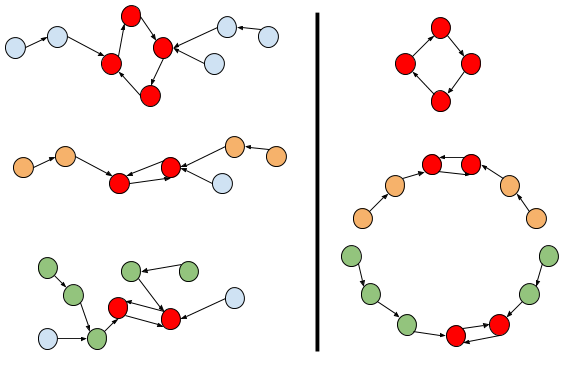

The Small dataset has a pretty low limit of 10 kids. That allows us to try every possible arrangement and check which ones would make valid circles (circles in which every kid is next to their BFF). For every possible subset of kids and every possible circular ordering of them, check that for every kid at least one of their neighbors is a BFF, and if that is the case, update a running global maximum if it is greater than the size of the circle we just checked.
There are a number of small but powerful optimizations to this approach. Notice that the permutations of a subset of kids S always appear as a prefix of the permutations of any other subset of kids that includes S. Moreover, the only difference in BFF checking is what we do for the first and last kid. So, we can just check all the permutations of N kids and consider whether each prefix forms a valid circle, and that accounts for all permutations of all subsets while reducing the number of total checks substantially. Note that some subsets are checked multiple times, but that is unimportant, as long as the procedure runs in the allotted time.
There are other possible optimizations, but this is more than enough. The following Python code implements the approach outlined above:
import itertools
# The F parameter is the list of BFF identifiers, but 0-based (subtracting 1 from the input).
def cc(F):
n = len(F)
r = 0
# Iterate over all possible orderings of the n kids.
for O in itertools.permutations(xrange(n)):
first = O[0]
second = O[1]
for i in xrange(1, n): # Iterate over the permutation, skipping the first.
# Check if i can be the last one by checking it and the first.
prev = O[i - 1]
cur = O[i]
if ((F[cur] == first or F[cur] == prev) and
(F[first] == cur or F[first] == second)):
r = max(r, i + 1)
# Check if i can be in the middle, and stop if it can't.
if F[cur] != prev and (i == n - 1 or F[cur] != O[i + 1]):
break
return r
Of course, a simple brute force approach, even with many additional optimizations, will not be fast enough for the Large dataset. Let's examine the input more closely. It is actually a function BFF that maps each kid to another kid. We can represent this function with a graph where the nodes are kids and the edges go from each kid to that kid's BFF. As you can see from the linked article, this type of graph has a particular property: each connected component is made up of a directed cycle and branches of nodes with the edges directed towards the cycle. To visualize it better, if we compressed the cycle into a single node, we would obtain a tree with all the edges pointing towards the root. Here's an important fact that will come up a lot: each connected component contains exactly one cycle.
Now that we have examined the input a bit, let's examine the output, or, better yet, let's examine the form of a valid circle. It must contain at least one kid k1. It must also contain k1's BFF, k2, who must be sitting next to k1. And k2's BFF k3 (who might or might not be k1), and so on. The BFF of the BFF of the BFF ... of k1 must be in the circle. In terms of the graph we mentioned above, we are starting on the node representing the first kid k1, and moving through the edges. Therefore, we will eventually end up cycling through the cycle in k1's connected component. (That cycle may or may not include k1.) This a second important property: for any connected component containing at least one kid who is in the circle, all of the kids in that component's cycle must be in the circle..
Consider a connected component with a cycle of more than 2 kids. If we put that cycle in the circle, there is no room for anyone else, as the cycle already forces the two neighbors of each kid. So, one possibility is that the final circle consists entirely of a single cycle from the graph.
Since nobody is their own BFF, there are no cycles with just 1 kid. If we consider a connected component with a cycle of exactly 2 kids l and r, the situation is different. We can sit l and r together, and we already know they are both happy, and we have room on l's left and r's right (or vice versa, but it is equivalent) to seat more kids. We could choose anybody, even from another component. However, we want the maximum number of kids, so we might as well choose an l1 whose BFF is l to sit next to l (if there exists such an l1). l1 is already happy, so can choose an l2 whose BFF is l1 and sit it next to l1. And we can continue this process. We can build a chain of kids to l's left following the edges of the graph in reverse, and similarly, we can build a chain of kids on r's right. When we are done, having added zero or more kids to each side, we have a line of kids from the same component that are all happy, so we can continue to add kids from other components right next to them!
To summarize the previous paragraph, we can build a chain of kids from each component with a cycle of length 2 (we already showed that cycles longer than that do not allow chains to be added). Since we want to construct the largest possible chain, we take the longest chain from each component with a cycle of length 2, and put them all together. That is, we sum their lengths as a possible final result to be compared with the largest cycle from the first case.
The following image illustrates the previous paragraph. On the left, a graph with three separate connected components is displayed. Red nodes are nodes in the cycles of each component. From the component with a cycle of length 4, we can build a circle (which we've shown on the right side of the image) but not add anything else. However, we can build a chain from each component with a cycle of length 2. Marked in green and orange are optimal choices for a chain on each side, and on the right you can see the circle of kids with the arrows indicating their BFFs at their side. You can see here how the cycles of length 2 allow us to add more kids, even including different connected components of the graph in the same circle, whereas longer cycles don't leave room for anyone else.

It is easy to find the connected components and their cycles using DFS or a number of other ways that we leave up to the reader to find and choose. There are also a number of ways to find the longest chains on each side of each cycle of length 2, that we also leave up to the reader. Notice that the process on each side is really similar to finding the height of a tree.